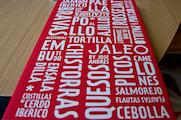

The first thing I did to learn how to code was picking up one of those FOR DUMMIES books on coding and after about 60 pages or so I felt like a dummy. I knew this wasn't going to work. The next thing I did was turn to my best friend Larry Page. I learned so much from him and he's always there for me. He referred me to a bunch of free online courses and again, I knew this wasn't going to work. I had to have a real person teach me and looked into different colleges. One night I was out drinking with some friends and I was talking about this with one of my friends in the field and she said "My co-worker Shay teaches a class in the evenings at this place called code academy, he's awesome" (she really did say he's awesome). I went to the open house and all the reservations I had about spending $2000 for a 10 week course went out the window.
It's been nearly a decade since I sat in a class. The anxiety was kicking in and I had no idea what to expect. I'm sitting in a classroom with a bunch of people I only know by email address and follow on the twitter account I opened because some guy named Mike McGee suggested it. Now it's time for each of us to stand up and introduce ourselves! I am not a fan of public speaking.
Now the learning begins. Tags, ID's, elements, classes? Say what???? Then it slowly started to all make sense. The rest of the week I'm going over the notes and next thing you know, I'm making a web page. It's looking ok for a guy who didn't know a thing about coding a few days ago. I'm feeling good. Just one more step, add the reset. WTF just happened!?!? I thought I was wrapping things up only to realize I was just starting. If I had to make and analogy, I'd say HTML is the bread and CSS is the butter. I'll have to say that the CSS portion is where the fun is at.
I'm feeling good until Git shows up and ruins the party. I'm staring at something they call a terminal like a deer in headlights. I'm just hearing random words like commit, merge, status, yada yada yada. Then out of nowhere I hear someone say there's a GUI app for this. It was music to my ears. Unfortunately, we still had to do it the hard way. To my surprise, I did it, and I'm sure one day I'll be thankful I did it the hard way.
Update: I still have no idea what's going on with Git.
Now we are learning how to make our websites actually look like something one would actually put out there for the world to see. By no means is it comparable to one that would be used by a large company, but it is a start. By using floats, margins, padding and dimensions, we are able to layout our content in a more aesthetically pleasing manner.
Through trial and error I am now able to place the pieces where I want them without having them wander all over the page when resizing the screen. At first, it was a little hard to grasp this concept. Now that I have a better understanding of this, the importance of divs, spans, classes and IDs is reinforced.
 I will admit, at first this lesson seemed a little dry and I questioned the importance of it. As the lesson continued, I began to realize this is one of the many little differences that seperates mediocre sites from great sites. Just learning how to build a website, I was spending too much time thinking about the builders perspective and not enough time taking the users perspective into consideration.
Another week of learning new tricks to slowly make my page look nicer and nicer. Last week we learned the importance of typography and this week we are learning how to implement backgrounds and gradients give our page that je ne sais quoi that makes certain pages appear nicer than others. The course is halfway through and I'm starting to feel like HTML and CSS are gateway languages, leaving me wanting more.
Who knew there was so much to know about lists? It wasn't as overwhelming as learning some of the other topics but it is definitely nice to know one more way to manipulate content on the screen. I'm more than halfway through this course and I am definitely glad I took this course.
Week 7?!?! Wow, that was fast and I feel like I've learned a ton so far. I've been coding long enough to know I like it and I've lived long enough to know there's always more to learn, so I went ahead and applied for the advanced HTML & CSS course.
It's nice to know how to build forms. It's not so nice that once the form is built, I can't do anything with it. Luckily there are a few resources out there that will take care of that problem. That still doesn't solve the problem because I came here to learn to build stuff on my own, not use pre-made forms to plug into my page. I guess that means I have more learning to do. Time is flying and the class is almost over.
First I'd like to say I wish I knew how to make tables before the calendar experiment because it would have been much easier. My first Starter League experience has been great and there is one week left. Currently I am wrapping up the Starter Night project with my group of three web-dev's as well as myself. This is probably the hardest part of it all. Everything they say is going over my head and I have to rephrase everything like a child to confirm I understand what they are saying. Trying to navigate through the labrynth of folders and files was a bit daunting at first but I know it will all come together fine in the end.
It's official, I'm coming back for more...